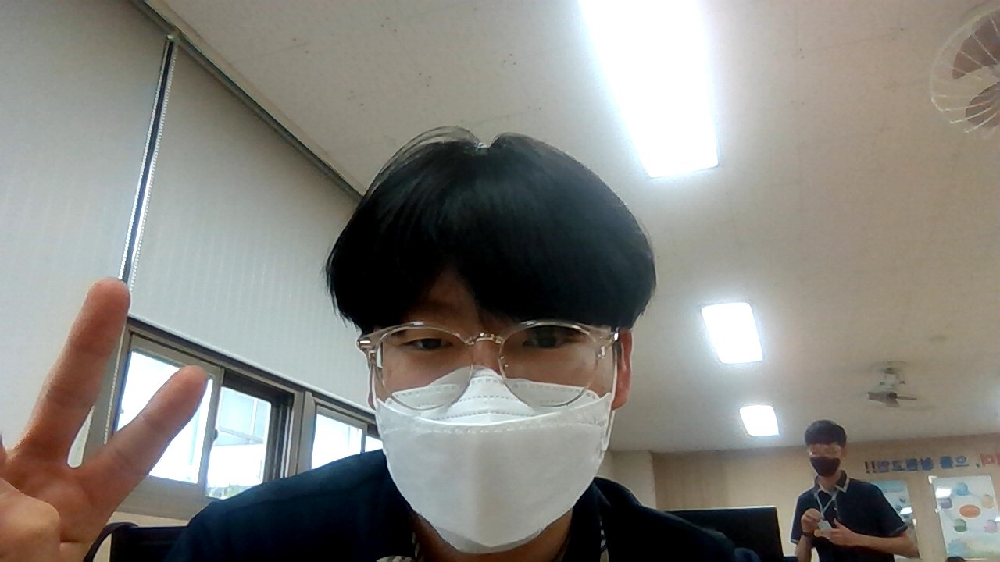

이름: 이현중
목표 대학: 서울대학교 자유전공학부

도대체 왜?
자유전공학부는 과탐 II과목에 응시하지 않고 I + I 조합으로 지원할 수 있는 유일한 과
그래서 고려대 컴공에서 바꿨다!
이 사람은?
엄청난 정시파이터 입니다.
내신5등급대 수능 만점 기원
이 사람은?
세계 최고의 게임 개발자가 되는것이 목표
그래서 c++을 곁들인.

내 사진을 올려보았다. 매우 신난. 얼평은 곤란.
비비눈나 사랑합니다
존경하는 선생님: 강인구선생님
보러가기 youtube.com